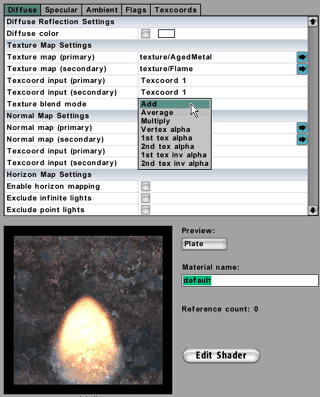
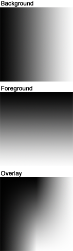

Implementing Overlay Blending
From C4 Engine Wiki
Implementing overlay blending
|
I have tried to split the process into a large number of small, easily digestible steps, which has the side-effect of making things somewhat lengthy. Essentially, I want to put the "why" before the "how", and that tends to add some bulk to kind of instruction. Users who may never have been exposed to things like node-based compositors or shader editors like, for instance, the shader network in XSI before, should hopefully be able to understand each step we take in the C4 shader editor, if it is already perfectly obvious why those steps are even taken in the first place.
If you have ever opened up a complex graph that someone else has built, you probably know the effects of that initial confusion when you stumble in the dark, trying to figure out how everything fits together, or even what it is meant to do anyway - you might end up assuming that there is some sort of dark voodoo involved where the original author of the graph simply threw a bunch of nodes and chicken bones in a glass jar, gave it a shake and poured everything on the floor hoping to get something useful out of it. Of course, the old infinite-monkeys-and-typewriters theory suggests that the above method would work too, given enough time, but that's an entirely different story.
In order to learn something about shader creation, it is far better (in my humble opinion) to start out with a blank slate instead: no graph at all, just a problem to solve. Then add just a little bit at a time with full knowledge of what each bit should do, and things will become crystal clear - even if you eventually end up with something big and voodoo-like anyway, but at that point you already understand everything about it. You work on the problem itself rather than nodes and routes.
Why a blend mode?
When thinking about custom shaders, it is quite possible that the first things that spring to mind might not necessarily be boring stuff like blending modes - and besides, surely it must be better to do that in Photoshop instead? As far as I'm concerned, the answer to that question is - yes, frequently, but not always. Since the introduction of the shader editor in C4 1.5, there are many good reasons to rethink what choices you have when approaching the large-scale logistics involved in making textures and creating materials for your game assets, and texture blending is only one of many options to consider.

Consider for a second the following scenario: you have two textures, A and B, currently in use for a few different models. While playing around with them in your 2D application of choice, you notice that you can produce a very interesting texture C by blending A and B in a certain way, perhaps with a grayscale grunge map thrown in for good measure. The standard way of handling this, is to save that newly combined texture C out to a targa file, and import it (and the grunge map) into C4 for further use. However, by doing so you have effectively increased the distribution size of your project, and texture C will of course also eat up additional graphics memory when loaded along with your other textures. Now apply this sequence of events to a real-world situation, with hundreds of textures, and the potential impact on storage requirements is quite apparent.
One alternative here is to combine the original textures A and B in a shader instead, and have that produce texture C on the fly, directly in the GPU. Texture C wouldn't even exist other than as single pixels as they are rendered on screen. You would only need to import the grayscale grunge map, and thereby you have saved storage and precious GPU memory. Your pool of "potential recombination textures" increases exponentially without affecting storage at all. You can extend this idea to a lot of similar scenarios where "live" recombination of certain textures means that one particular texture could be used for hundreds of different models instead of only a handful. Of course, as with everything else, you do not want to abuse and overuse this approach, but you have to find a good balance between different resource concerns. Overly complex shaders cost GPU processor time, so sooner or later you reach a breaking point where performance will become a bigger problem than storage and graphics memory. In short, if you get too cute, there will be negative consequences eventually. All of these large-scale considerations are outside the scope of this article however.
With all of that front matter above out of the way, it's time to move on and deal with the main topic - overlay blending.
Overlay overview

To rephrase and simplify: foreground and background are multiplied where the background is dark, but added together where the background is bright. The resulting image therefore is one of strong contrast and enhanced colour, and that is the main reason I decided to implement the overlay mode rather than any of the others - it is just such an extremely nice and versatile mode.
In order to make a shader out of the conceptual description above, we can initially conclude that there are three different sections to build: the additive blend, the multiply blend, and a mask defined by the intensity of the background texture (that would be the result of the comparison to 0.5 above). To round things off, we then need to composite the output from those different blends, and finally perhaps add the equivalent of an opacity slider to allow the result to be tweaked. Aside from this divide-and-conquer approach, we also need some formal definitions of the mathematics involved for these different bits and pieces, but then we are all set.
Texture input
Prior to building the components required for the actual blending, we definitely need some input textures first, so setting those up will make a good starting point for this exercise. Before we continue, I have to point out an important fact about the screendumps you will see below: I have moved the nodes around a bit at some stages, only to avoid having to show huge images simply because some of the connected nodes happen to be very far from each other. In other words, if you find that your layout does not exactly match the screendumps, there is no cause for alarm - your layout is fine.
If this is your first time using the shader editor, you might want to familiarize yourself with the basic tools before moving on. The official overview can be studied in The User Manual for the Shader Editor
Now let's get on with it: first create a new material in the material editor, and click "Edit Shader" right away to open the shader editor. On its Ambient page, delete the default constant colour node to get a clean canvas, then add two Basic/Texture Map processes, and one Interpolants/Texcoord 1 process, then press '9' on your keyboard to get the Draw Route tool and connect the nodes like this:
To draw a route, click straight in the middle of the node you want to take data from, then drag to the desired input tab of the node you want to send that data to, and release the mouse button. That's it. As you can see in this example, we will simply use two textures already available in the Data/Demo/texture directory: "BiohazardSign" for the foreground layer, and "Bark2" for the background layer. Change to the select or move tool and double-click the texture nodes, assign those textures, and type "Background" and "Foreground" respectively in their comment fields:
If you are using the demo version of C4, you may have to type the texture path yourself, as shown above. In the licensed version, just click the blue arrow button to get a filepicker. Needless to say, you can of course use any textures you want here.
The reason for starting out in the ambient pass of the shader, is because that makes it easier to see clean and constantly lit results in the world editor, without having to mess around with any light source objects. Once the whole setup is finished, we can just paste a copy of everything into the light pass. As you may already know, the nodes in the ambient pass define how the material should look in the presence of ambient light, while the nodes in the light pass defines how the material should react to local light sources such as point lights and spotlights. There is nothing stopping you from having entirely different setups in these two passes, but most of the time you will want them fairly similar.
Building the blend
Section 1: The multiply blend
The multiplication is quite simple, so let us take care of that right away. First off, the formal definition of this particular section is as follows:
Output = FG * ( BG / 0.5 )
where FG is the foreground layer, and BG the background layer. Since it is usually recommended to use multiplication rather than division, for performance reasons, we can change and reduce this to:
Output = FG * ( BG * ( 1 / 0.5 ) ) = FG * BG * 2
Thus, the first calculation we want to translate into shader nodes is as simple as:
FG * BG * 2
which means we need two Math/Multiply nodes (there are two *-signs above) and one Basic/Constant Scalar node (there's one constant number). Set them up like this:
To change the default 1.0 in the constant scalar node, double-click it while the select or move tool is active, set the value to 2 and click OK. Use the Draw Route tool to connect the left multiply node to the A-port on the right multiply node, then the constant scalar to the B-port on the right multiply node:
Of course, the order of the terms does not matter here - we just want to keep a neat layout whenever we can (because the term spaghetti code can take on a whole new meaning in the shader editor if you're not careful).
To complete this section, draw a route from the foreground and background texture nodes to the A and B ports respectively on the left multiply node. The right multiply node can now be considered the output node for the entire multiply blend section. You can double-click the node and type something like "Output" in the comment field to indicate this. To keep things clearly readable further down the road, it's also a good idea to frame individual sections using the Draw Section tool:
Double-click the gray top bar of the section (with select or move tool) and type "Multiply Blend" in the comment field, then click OK. Note that neither node comments nor sections affect the execution of the shader in any way, they are only there to make things easier to read and follow.
At this point it might be a good idea to see what the result looks like so far. To avoid influence from lights at this point, click the Light tab, select the Diffuse Reflection node and hit delete. We will put it back later. Then go back to the ambient pass and draw a route from the right multiply node to the RGB input on the green Lighting Output node to the far right in the editor:
The result at this point should just be fairly dark, like this:
Section 2: The intensity mask
This part is slightly more involved than the previous section. Remember, our goal is to render the result of one of the two blending methods based on the intensity of the background texture. The intensity breakpoint value in the original specification for overlay blending is 0.5, which means that:
- If the BG intensity is less than 0.5: render the result of the multiply blend
- If the BG intensity is 0.5 or more: render the result of the additive blend
All of this of course assumes that the full range is 0.0 - 1.0, so the 0.5 is simply the exact middle of the intensity range. There are a few different ways to calculate intensity (one channel) from an RGB value (three channels), but to keep things straight-forward we are just going to use the most obvious method - calculating the sum of the individual colour components in a fully linear fashion where all three channels are considered equally important. Then we can compare this sum to the constant 0.5. However, since the the full range of the sum of three channels is 0.0 - 3.0 (in a white pixel, all three components are 1.0), we will change the constant to 1.5 instead, as that is the midpoint of this new range. The natural thing to do here would otherwise be to divide the sum by 3 first to get the value back into the 0 - 1 range, but that would actually be a redundant step, thus a waste of GPU cycles when simply changing the constant instead yields the same end result.
In the shader editor's Math category we find a process called Set If Less Than, a handy node that can be used to perform the comparison to 1.5 and create the mask we need. Add the Math/Set If Less Than node and a Constant Scalar node (to hold the 1.5) somewhere beneath the previously built multiply blend section:
Now set the constant to 1.5, and connect it to the B-port of the Set If Less Than node. To calculate the sum of the individual components of the background texture, i.e. R + B + G, we need to insert two Math/Add nodes. Connect the output of the first Add node to the A-port of the second Add node, and the output of that in turn to the A-port of the Set If Less Than node:
With that done, we need to feed the background texture output into these Add nodes to calculate the sum of the three colour channels. However, the default route from a texture node contains a vector with three values, for R, G and B respectively, and the optional fourth value for the alpha channel, but since we are currently only interested in the individual scalar components if this vector, we will need to use swizzles to get what we want.
Start by drawing multiple routes from the background texture node to both the A and B ports in the first Add node, and to the B-port of the second Add node:
Then change to the select tool, and double-click on the first of the new routes - on the route itself that is, rather than any of the nodes. In the Route Info dialog that pops up at this point, change the swizzle to r (R):
This effectively causes the route to carry only the red component instead of the full vector, which is exactly what we want here. Now change the remaining two routes too, but use swizzles g and b respectively to get the green and blue channels. The order in which they appear does not really matter, just make sure they are all accounted for:
If you temporarily draw a route from the Set If Less Than to the RGB-port of the green lighting output node, you should now be able to see that the shader preview shows bright pixels in the areas where the original background texture is dark (darker than 0.5) and black everywhere else. When used like this, the Set If Less Than node will simply output white where the condition is true, and black where it is not. The preview appears to show a shade of gray rather than white, but that is due to the fact that the ambient light is not set very high in the preview panel:
This means that the intensity mask is finished, and that the Set If Less Than node is our output for this particular section. Go ahead and mark it as such by adding some text in the comment field of the node. Also, for clarity, add a frame around these nodes using the Draw Section tool. We will use this mask output shortly when setting up nodes for the final compositing, where everything comes together.
Section 3: The additive blend
This last piece of the puzzle is somewhat complicated compared to the previous bits. The formal definition of the additive section of the overlay mode is as follows:
Output = ( FG * ( ( 1 - BG ) / 0.5 ) ) + ( BG - ( 1 - BG ) )
FG and BG still means foreground and background respectively. Again, we might want to get rid of the division by 0.5 and replace that with
a multiplication by 2:
Output = ( FG * ( 1 - BG ) * 2 ) + ( BG - ( 1 - BG ) )
Now, if we take a second look at this, we see that inversion of the background value ( 1 - BG ) appears twice. This means that we can set up one single inversion, and then route that result to two different places. Compute once, use twice - that's always a good thing.
Inversion turns out to be such a common operation, that there's actually a specific node available to perform it in one single blow. Add a Math/Invert node somewhere above your old multiply section, then draw a route from the background texture to the A-port on the Invert node:
That will take care of both instances of ( 1 - BG ) in the formula above. Moving on, we find that the first instance of the inverse is to be multiplied by 2, so we add a Math/Multiply node and a Basic/Constant Scalar node, and connect them like this:
Do not forget to change the scalar to 2.0.
That's the whole ( 1 - BG ) * 2 bit taken care of. The second instance of the inverse BG is found in the last half of the formula: ( BG - ( 1 - BG ) ). In other words we should subtract the inverse background value from the original background value, so we need to add a Math/Subtract node as well. Draw a route from the background texture node to the A-port of the Subtract node, then another route from the Invert node to the B-port of the Subtract node:
At this point, we have now translated most of the formula - except for one multiplication and one addition: the (1-BG)*2 should be multiplied by FG, and then we want to add the (BG-(1-B)) to the result. Those last steps are best handled using a compund node called (not surprisingly) Multiply Add. While I have no facts or benchmarks to back it up, it's probably safe to assume that the monolithic Multiply Add executes slightly faster than one Multiply node followed by an Add node, and even if it does not, it is evident that using it will at least help reduce clutter.
So, lets add that Math/Multiply Add node, and connect to its A-port the output from the previous "plain" Multiply node. The result of the subtraction we added earlier should be routed to the C-port (because this was the part we wanted to add to the result of the final multiplication). To complete the multiplication portion of the Multiply Add, connect to its B-port the output from the foreground texture node:
With that done, the entire additive blend formula is in place, and the Multiply Add node is the output of the whole section. Name the node accordingly by typing something in the comment field, and draw a section named "Additive Blend" around it.
The final steps
Compositing
If we zoom out now and take a look at what we have assembled so far, we have three different nodes called "Output" (or whatever you named them) for our three sections: the additive and multiply blends, and the intensity mask. Those three output nodes (highlighted with yellow boxes in the screendump below) are the only things we need to worry about from now on.
The final output colour for the entire graph, i.e. the complete overlay process, is essentially a matter of performing a mutually exclusive mix between the additive and the multiply section, using the black-white signal from the intensity mask section to control where each blend should go. A formal definition would look something like this:
Output = A * ( 1 - I ) + ( I * M )
where A means Additive blend, I means Intensity mask, and M means Multiply blend. This function follows the general form of a linear interpolation, but to avoid having to convert some of the inputs, we will build the expression using discrete nodes rather than the monolithic Linear Interpolation node.
One of the first things we notice is the inversion ( 1 - I ). Yep, they really do show up all the time.
Let's add a Math/Invert somewhere to the right of all the previous nodes, then draw to its A-port a route from the Intensity Mask output node. It is perfectly safe to invert the output from the Set If Less Than node, since it is clamped to a 0 - 1 range. So, even though it is fed our RGB sum which has a 0 - 3 range, the result of the logical test is a boolean, limited to either 0 or 1 for each tested component.
The second half of the formula, after the plus sign, tells us to multiply the I and M - so we add a Math/Multiply node and connect the outputs from the Intensity Mask and the Multiply Blend sections to its A and B ports respectively. The result at this point should look like this:
All that remains is to multiply the A with the invert node output, and add the output from the previous multiply node to the result. Looks familiar? Indeed, it's another job for the compound Multiply Add node. So, put one of those to the right of the recently created nodes, and connect the additive blend section's output to the Multiply Add's A-port, the Invert node's output to its B-port, and finally the last multiply node's output to its C-port.
If you draw a route from the Multiply Add node to the RGB-port of the green Lighting Output at this point, you should be able to see the final result of the foreground texture overlay blended with the background texture. These final nodes and routes should look like this:
This is a good time to name the output node (the Multiply Add process) and perhaps draw a section box around this final compositing section as shown above. Name the section "Final Composite".
One step further
We could of course settle for what we have done above, but it might be useful to add a few more things to let us control exactly how much impact we want the foreground layer to have on the background layer. Something similar to the layer opacity control in Photoshop. The easiest way to do that is to use a linear interpolation node and an additional scalar to control the interpolation.
First put a Math/Linear Interpolate node and a Basic/Constant Scalar node to the right of all the other nodes, then draw a route from the scalar 1.0 to the t-port of the Linear Interpolate node. Connect the final composite output node to the B-port on the linear interpolator, and the background texture output to the A-port:
With the scalar value at 1.0, the foreground texture is fully overlaid. If you change the scalar to 0.0, the foreground is completely gone (in Photoshop terminology, its opacity is 0%). Any other value between 0 and 1 will give you a more or less visible foreground blend - in other words, it's just an opacity slider.
The Linear interpolation node can be used for any type of data, and it's very handy whenever you want to get some datapoint that sits somewhere between two different endpoint values in any context. If you're a programmer or mathematician, you already know all there is to know about the versatility of this particular function, affectionately known as a "lerp" by those who are in a position to come up with something as strange as affectionate names for mathematical functions.
At any rate, the C4-version of Overlay blending is now completed. The full graph should look something like this (click to view full resolution):
A few more steps beyond
At this point, we can do all sorts of experiments. One obvious tweak is to replace the scalar value feeding the linear interpolator with some other source instead of a constant - for instance another texture's alpha channel, or any other channel for that matter. Anything you plug into the t-port of the linear interpolator can control its output, so it is really quite easy to get all sorts of interesting results.
Or, if you keep the constant scalar node in the t-port, you can change its parameter slot (double-click the node to get the process info) to one of the numbered parameter 0 - 7 options, which will let you control this value, and by that the blend opacity, from a script somewhere else. That means you could for example have a trigger somewhere in your world affect the blending. There's tons of peculiar possibilities to explore along those lines, all of which are outside the scope of this tutorial.
Another option is to change some of the other constants within the graph. For example, the 1.5 in the intensity mask section, which defines the breakpoint between the two different blends, can be changed to anything in the 0 - 3 range for some dramatically different results. Doing so is however likely to cause severely clipped output values under certain circumstances, since the rest of the calculations are balanced for the original value of 1.5 - but then again, it's not rocket science, so it's perfectly safe to make things that go horribly wrong!
Fixing the light pass
The very last thing to do, regardless of what sort of inhuman torture you subjected your graph to while reading the previous paragraphs, is to select all the nodes, copy them, jump to the light pass tab and paste them in there too. This, of course, is based on the assumption that you want the same look when the surface is exposed to actual light sources.
To get a standard diffuse lighting response here, just multiply the final output from your newly pasted graph with the output from a Complex/Diffuse Reflection node and route the result to the Lighting Output node. You should be able to do this yourself by now, without any screendumps to guide you. Add specular reflection too if you like ("add" being the keyword), and anything else you might need. Let simmer for 20 minutes, serve with rice, soy sauce and a cold beer.
Enjoy.